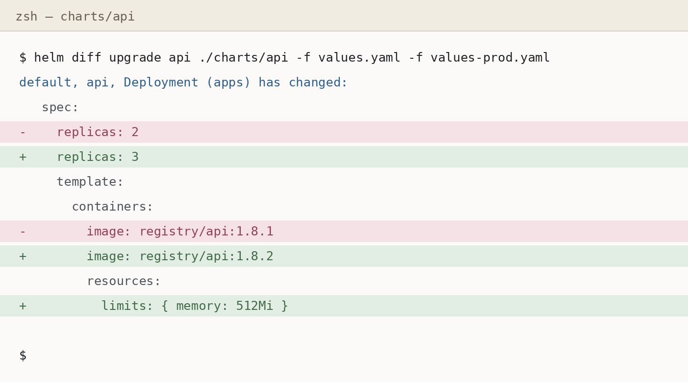

TL;DR
- Um
values.yamlbase com defaults seguros, e um arquivo pequeno por ambiente. - Segredos entram em tempo de deploy, nunca no chart.
- Rode
helm template+ schema no CI antes de qualquerupgrade.
Todo time que adota Helm passa pela mesma fase: um values-prod.yaml que começou como cópia do de staging e, seis meses depois, ninguém sabe dizer o que mudou entre eles. Este texto é sobre sair dessa fase1.
#Um values por camada
A ideia é simples: o arquivo base descreve o serviço; os arquivos de ambiente descrevem só a diferença. Se um override tem mais de vinte linhas, provavelmente é configuração do serviço disfarçada.
Nota. A ordem dos
-f importa: o último arquivo vence. Base primeiro, ambiente depois.Segredos fora do repo
Três regras que evitam a maior parte dos incidentes:
- O chart referencia um
Secretexistente pelo nome. - Quem cria o segredo é o pipeline ou o External Secrets, não o chart.
- Nenhum valor sensível em
values-*.yaml, nem comentado.
Configuração boa é a que você consegue ler num diff de pull request sem abrir outro arquivo.
values.yaml
values-prod.yaml
--set secrets
release
Antes de aplicar, o helm diff mostra exatamente o que cada camada muda no cluster:

helm diff upgrade com base + produção. Imagem em largura estendida: ocupa a coluna do texto e avança sobre a margem direita.Com isso no lugar, o próximo passo é validar o resultado renderizado no CI, antes de qualquer cluster ver o manifesto.
- Se você ainda não chegou nela, guarde este link para daqui a seis meses. ↩